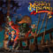
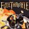

Note: These examples are build using jQuery, but that is not required.
Lovely things list
- Sort by name
- Sort by category
- Show all
- Only show games
- Only show beverages
-

Monkey Island 2: LeChuck's Revenge Game
Monkey Island 2: LeChuck's Revenge is an adventure game developed and published by LucasArts in 1991. It was the second game of the Monkey Island series, following The Secret...
-
Good Coffee Beverage
Coffee is a brewed beverage with a dark, slightly acidic flavor prepared from the roasted seeds of the coffee plant, colloquially called coffee beans.
-

Full Throttle Game
Full Throttle is a computer adventure game developed and published by LucasArts. It was designed by Tim Schafer, who would later go on to design the critically acclaimed titles Grim Fandango, Psychonauts and Br??tal Legend.
-
Brooklyn Lager Beverage
Brooklyn Brewery was started in 1987 by former Associated Press correspondent Steve Hindy and former Chemical Bank lending officer Tom Potter.